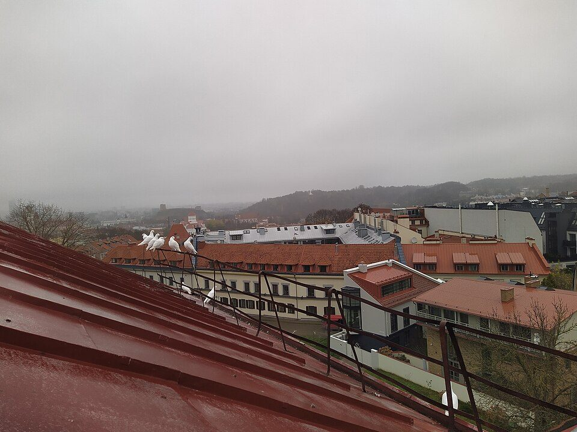

And Everything That Is Beautiful Is Beautiful
- who
- Ir Visa Tai Kas Yra Gražu Yra Gražu
- what
- Home tapes
- when
- 1987–
- where
- Vilnius, Lithuania

In 1987 the painter Artūras "Šlipas" Šlipavičius and the record collector and dealer Artūras "Baras" Barysas started a band in the Vilnius underground. Many of their home tapes existed in a single copy. The name they chose was Ir Visa Tai Kas Yra Gražu Yra Gražu. The name they didn't choose translates as "Kill the close one, before the far one comes and kills you".
That rejected name could stand as the motto of this whole blog.